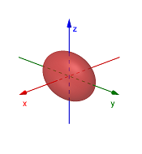
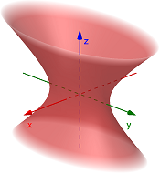

Surfaces
Recall that in precalculus we studied different types of conic sections (circle, ellipse, hyperbola, and parabola) in the \(xy\)-plane. We now want to extend these conics into surfaces in 3D space. For example, an ellipse in the \(xy\)-plane would be similar to an ellipsoid in 3D space.
Notice the similarities in the equations and graphs above. Both extend along the \(x\)-axis to \(\pm 2\), and both extend along the \(y\)-axis to \(\pm 3\). Then the ellipsoid extends along the \(z\)-axis to \(\pm 1\).
Before we get to actually defining all our surfaces, there are a couple building blocks that we need to cover first. These will provide a sort of skeletal structure or scaffolding for how we can visualize and draw the surfaces.
Cylinder
The most basic type of surface is called a cylinder. By the term cylinder, we do not mean a right circular cylinder like a can. Rather, a cylinder is a surface made up of all lines parallel to a given line that passes through a plane curve.
Use the Geogebra applet below to explore the definition of a cylinder. You may want to follow these steps. You can click-and-drag to rotate the view around the origin.
- Click the "Plane" checkbox. You should see a plane appear in 3D space.
- Click the "Curve in Plane" checkbox. You should see a sinusoidal graph appear within the plane.
- Click the "Line through Plane" checkbox. You should see a blue line that passes through the curve and plane. In this illustration, the line is perpendicular to the plane.
- Click the "Parallel Lines" checkbox. You should see an orange line appear that is parallel to the blue line and also passes through the curve.
- Use the slider to slowly advance the x-values from -3.53 to +3.53. You should see new lines appear, all of which are parallel to the blue line and pass through the curve.
- Click the "Cylinder" checkbox. This should show a green surface that is shaped like all the orange lines. So the idea is that if we could actually draw ALL the lines that were parallel to the blue line, the result would be the green surface.
The following video gives a few more examples.
Go to GeoGebra Classic 3D (new window) [https://www.geogebra.org/classic#3d] and graph the following cylinders. To graph a cylinder in GeoGebra, just type the given equation into the Input space.
- \(y = x^2 + 1\)
- \(z = x^2 - 2\)
- \(y^2 + z^2 = 9\)
Do the graphs you get make sense to you in terms of the given equations?
Traces
A trace of a surface is a point or curve formed by the intersection of a surface with a plane that is parallel to one of the coordinate planes. You could think of a trace as a cross-section of the surface.
Use the Geogebra applet below to explore the definition of a trace. You may want to follow these steps. You can click-and-drag to rotate the view around the origin.
- Click the "Surface" checkbox. You should see a blue paraboloid appear, which looks like a parabola rotated around the z-axis.
- Click the "Planes" checkbox. You should see several horizontal planes appear, each parallel to the xy-plane. What shape does it look like each plane makes when it intersects the blue surface?
- Click the "Plane Trace" checkbox. You should see orange curves appear that outline these intersections. In this illustration, notice that they are all circles of increasing radius as the z value increases.
- Click the "xz & yz Traces" checkbox. You should see additional orange curves appear. These represent the intersections of the the xz-plane and yz-plane with the surface.
- Uncheck the "Surface" and "Planes" checkbox. All that should remain is the orange curves. These represent some of the traces that, when all put together, would generate the entire paraboloid. They serve as a mesh or skeletal structure for the surface.
The idea with traces is that we could determine a collection of the traces for a given surface and sketching those traces would create a skeletal graph of the surface. In the above applet, the paraboloid equation was \(z = x^2 + y^2 - 1\). We could start by determining the trace equations for the coordinate planes and then for planes parallel to the xy-plane.
- Coordinate: The \(xy\)-plane is \(z = 0\), so \(0 = x^2 + y^2 - 1\) results in the circle \(x^2 + y^2 = 1\).
- Coordinate: The \(xz\)-plane is \(y = 0\), so \(z = x^2 + 0^2 - 1\) results in the parabola \(z = x^2 - 1\).
- Coordinate: The \(yz\)-plane is \(x = 0\), so \(z = 0^2 + y^2 - 1\) results in the parabola \(z = y^2 - 1\).
- Parallel: For the plane \(z = -1\), we get \(-1 = x2 + y2 - 1\) which results in the equation \(0 = x^2 + y^2\) meaning we only have the origin as the intersection.
- Parallel: For the plane \(z = 1\), we get \(1 = x^2 + y^2 - 1\) which results in the circle \(x^2 + y^2 = 2\).
- Parallel: For the plane \(z = 2\), we get \(2 = x^2 + y^2 - 1\) which results in the circle \(x^2 + y^2 = 3\).
- Parallel: For the plane \(z = 3\), we get \(3 = x^2 + y^2 - 1\) which results in the circle \(x^2 + y^2 = 4\). If we continued going, higher values of \(z\) will just result in circles with larger radius.
In practice, once we figured out all these traces, we could sketch them on a graph to see what the original surface would look like.
Surfaces
Here are the common surfaces that you should be familiar with, which we call quadric surfaces.
| Graph | Equation | Properties |
|---|---|---|
|  | \[\frac{x^2}{a^2} + \frac{y^2}{b^2} + \frac{z^2}{c^2} = 1\] |
All traces are ellipses. If \(a = b = c\), then the ellipsoid is a sphere. The intercepts are at \((\pm a, 0, 0)\), \((0, \pm b, 0)\), and \((0, 0, \pm c)\). |
|  | \[\frac{x^2}{a^2} + \frac{y^2}{b^2} - \frac{z^2}{c^2} = 1\] |
Horizontal traces are ellipses. Vertical traces are hyperbolas. The central axis (of symmetry) corresponds to the variable with a negative coefficient. |
| \[\frac{z^2}{c^2} - \frac{x^2}{a^2} - \frac{y^2}{b^2} = 1\] |
Horizontal traces above \(c\) or below \(-c\) are ellipses. Vertical traces are hyperbolas. The two negative signs indicate two sheets, and the positive variable represents the central axis. |
|
| \[\frac{z^2}{c^2} = \frac{x^2}{a^2} + \frac{y^2}{b^2}\] |
Horizontal traces are ellipses. Vertical traces in the coordinate planes are two intersecting lines. Vertical traces not in the coordinate planes are hyperbolas. |
|
| \[\frac{z}{c} = \frac{x^2}{a^2} + \frac{y^2}{b^2}\] |
Horizontal traces are ellipses. Vertical traces are parabolas. The variable with a power of 1 indicates the central axis. |
|
| \[\frac{z}{c} = \frac{x^2}{a^2} - \frac{y^2}{b^2}\] |
Horizontal traces are hyperbolas. Vertical traces are parabolas: those parallel to the \(yz\)-plane open down and those parallel to the \(xz\)-plane open up. If the signs flip, then so does the opening directions. |
You may use the Geogebra applet Quadric Surfaces (opens in new window) to interact with the graphs illustrated above. The following videos give examples for each type of surface above.